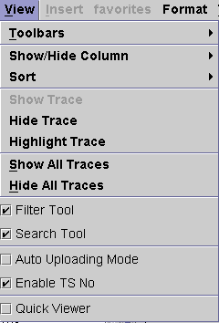

View Menu
The View menu provides functions related to controlling toolbars and how the Waveform Navigator Tool (WNT) is presented.

The following menu items are included:
Toolbars - allows you to display the Graph Customization, Cursor, Marker, Hardware Access, and User Defined Function toolbars in the toolbar area of the main window.
Show/Hide Column - allows you to expand or collapse the Test Suite, TS No, Pin, Label, Site, and Trace columns of the WNT.
Sort - allows you to sort the waveforms listed in the WNT by Test Suite, TS No, Pin, Label, Site, or Trace.
Show Trace - makes selected waveforms in the WNT that were hidden, using the Hide Trace menu item, visible.
Hide Trace - makes selected waveforms in the WNT non-visible.
Highlight Trace - makes all displayed waveforms in the selected graph of the Waveform Graphs Tool (WGT) non-visible except for the highlighted ones. The waveforms are selected for highlighting from the Selected Graph table of the WNT.
Show All Traces - makes all selected waveforms in the WNT visible.
Hide All Traces - allows you to make all selected waveforms non-visible in of the corresponding graph in the WGT.
Filter Tool - allows you to expand/collapse the filter tool in the WNT. This tool is used to view only those waveforms corresponding to the filter criteria.
Search Tool - allows you to expand/collapse the search tool in the WNT. This tool is used to view only those waveforms corresponding to the search criteria.
Auto Uploading Mode - enables waveforms in the Resuls Waveforms table of the WNT to be uploaded into a graph in the WGT automatically.
Enable TS No - allows you to enable the test suite number as an identifier in the WNT.
Quick Viewer - always displays the waveform selected in the Result Waveforms table.